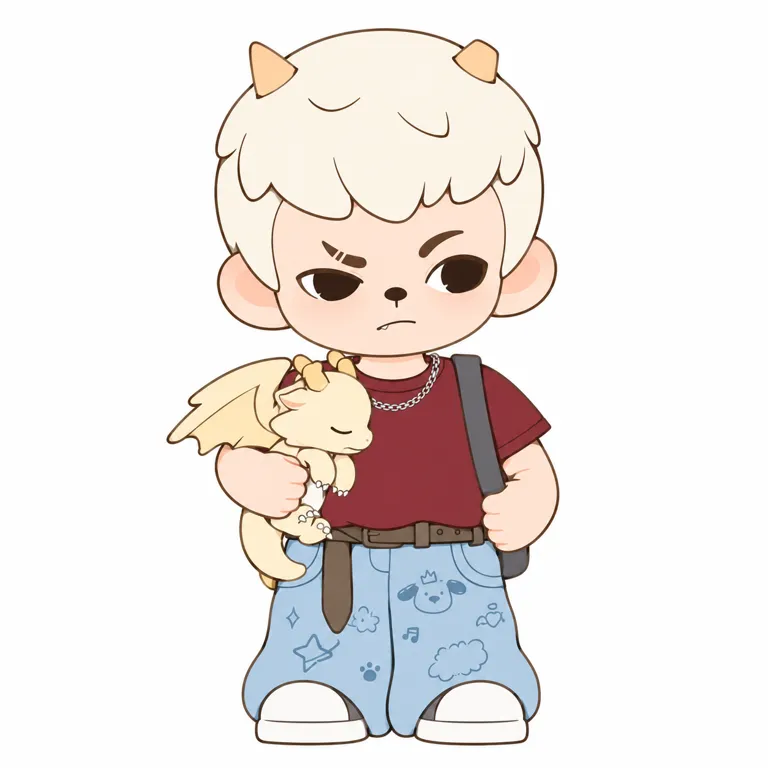
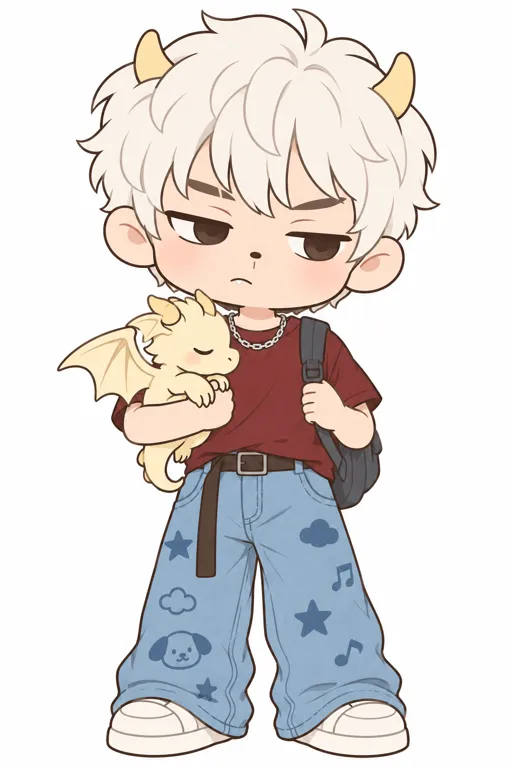
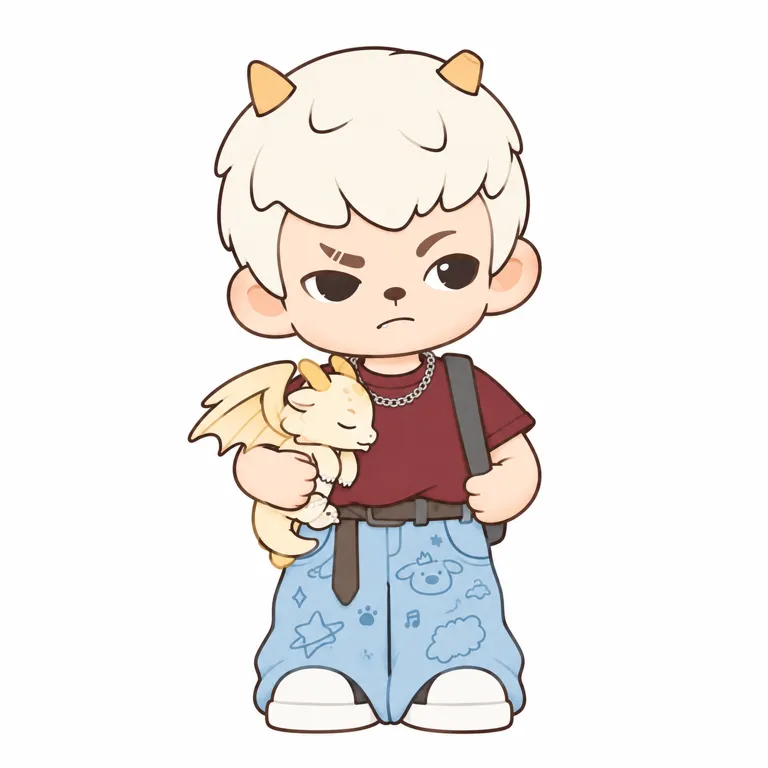
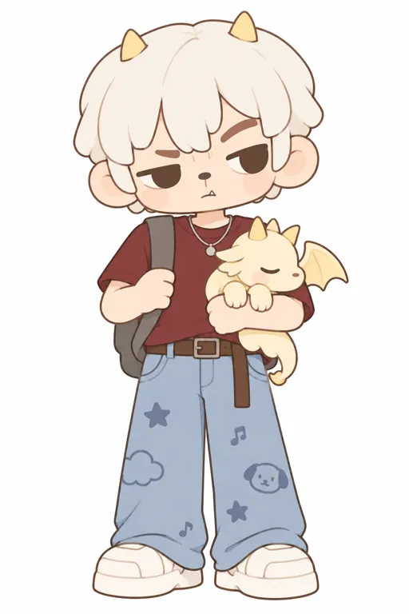

02至少2023已展售，不从2024产品倒推诞生
同期报道比后来的回顾更能锁定公开出现下限。
| 时间 | 核验内容 | 证据边界 |
|---|
| 2023-09-22—10-29 | 游戏人生全国首展，上海世茂广场；2023-10-01报道记L1快闪店9款新品可买。 [R02] | 同期公开展售可核；全国首展≠全球首售，9款≠盲盒盒数 |
| 2024-08-03 | 年少时光，现行官方百科Release Time。 [R08] | 不是首代证明；产品记录时间与网页发布时间分开 |
| 2025年 | 万物生长、天生玩家、请与我约会等系列登记。 [R09] [R10] [R11] | 闭眼休息、奇幻配件与日常装扮扩展情境 |
| 2026年 | mini、异世界及城市漫步、怪兽低气压等毛绒载体继续出现。 [R13] [R12] [R14] [R15] | 持续上新可核；各线销量与增长未核 |
| 2026-05-13 | 官方回顾称2023推出，受粉丝希望有守护哥哥的诉求启发。 [R04] | 品牌回顾，不替代2023原始策划或众筹记录 |
路径暂归纳为产品和渠道先行。未找到证据证明先有大规模漫画、动画或表情包受众，再转化成玩具；精确创作日、全球首售与首品原价仍未知。
05用一款色板说明方法，不替全IP定色
V03：天生玩家／白发角饰抱幼龙款；屏幕采样而非官方色号。
奶油白#eeeae5
头发 · 1520,720
桃白#dec9bd
额头 · 1500,1130
酒红#974e52
上衣 · 1600,1940
浅蓝#adbfcd
裤腿 · 1660,2410
深棕#604844
鼻子 · 1500,1300
奶油黄#e2d5c5
幼龙脸 · 1150,1740
从3000×3000 RGBA原文件的不透明单像素直接读RGB，坐标以左上角为原点，未校色。渲染中包含高光、阴影和反射；没有主体分割，不给面积百分比，不能把取样值交作生产验收色。
奶油白头发、酒红上衣与浅蓝阔裤只属于该款。V01棕红白、V02棕绿白、V04蓝灰黑紫、V07紫色毛绒都不同。候选稳定关系是浅色脸与较深五官的明度分层；V07眼色和V05遮挡又带来例外。V08地铁暖光与V07背景药瓶属于展示环境。
暂无全IP官方签名色、标准色卡或材料色样；未实测灰度、头像缩小、5cm实体识别和色差。
07关系提供内核，主题让动作可见
没有为角色补造一套未经核验的长篇故事。
哥哥关系
经营者称Rayan是Zoraa亲哥哥，官方回顾以守护与粉丝诉求解释角色出现。它提供互动入口；关系带来多少拉新和留存，尚无数据。[R05] [R04]
让在意落到动作
吃瓜陪小狗、抱花休憩、怀抱睡眠幼龙，使冷淡脸不止一种语气。动作与道具比抽象“痞帅”更能说明具体情境。[R08] [R09] [R10]
主题提供新鲜感
异世界以职业幻想、长袍、骨纹和球体扩展角色；官方匿名设计师另谈独立眼片与涂层等系列工艺。这些均不推广成全IP工艺标准。[R06] [R12]
未做官方账号连续30天内容抽样、互动中位数和广告归因。图鉴、开箱与陈列能提供传播材料，不证明内容本身导致成交。
11两种输入，各测两轮，分别给结论
唯一目标V03：天生玩家／白发角饰抱幼龙款（观察命名）。
实测结论：纯文字两轮仍未通过；附图V2在去字可见正面二维转绘范围已接近。宽圆方头、不对称眉眼与抱幼龙构图基本保留；发块、幼龙翅角爪、裤纹和轻微渐变仍有差异，不宣称精确复刻或全IP母版。
 V03 · 官方商品原图
V03 · 官方商品原图
查看官方出处 ↗
附图V2 · 实际生成
去字二维研究转绘，非官方原图以下是研究者依据作品重建的提示词，不是作者原始提示词，也不说明原作由AI生成。中文已经实际生成；英文、重复稳定性与背面结构没有测试。
已测词／中文／必须附V03原图
依赖同一原图，不可作为纯文字复现成功的证明。范围主动删除衣裤文字，保留非文字图案。
将参考图1中的指定款可见正面转绘为白底二维造型档案。参考图是唯一身份依据，保留相同轮廓、比例、五官与姿态。只把3D明暗变成平涂色块和细棕色轮廓线。彻底去掉皮肤、头发、裤子和幼龙上的渐变、高光与投影。衣裤上所有字母文字留空，保留非文字小图案。无标志、水印、底座或背景。
锁住这些可见关系：大而宽的圆方头、短身、圆耳，奶油白块状短发的整块圆拱轮廓和六七束宽钝刘海，头顶两根短浅杏黄小角；不要改成猫耳、细碎动漫发或长发。左眼更窄更低、右眼稍开，两眼外形和高低不对称；深棕黑眼珠与窄三角眼白，上眼皮细线，不添加睫毛。左边棕眉两条浅断缝，另一边弯眉上挑。深棕小扁鼻与鼻下短竖线，原图那条短弯嘴、左嘴角极小牙尖；桃白脸与极淡桃粉颊，不添加爱心标记。
保持原图酒红T恤、细银灰链、右肩灰背包带、腰侧握带的右手、棕腰带及垂尾、浅蓝阔裤和白圆鞋。裤面非文字的狗脸、星、云和音符保持小而疏；不放大或改成整面图案。背包仍主要藏在身后。左臂抱奶油黄睡着的小幼龙，匹配其朝右的圆吻、闭眼、小角、垂下短爪、弯尾以及向左伸展的小蝙蝠翅；不加笑嘴、红脸、鳞片或花纹。原图里的体块连接和遮挡都要保持，不拉长腿，不变动倾头方向。单角色全身居中四周留白，仅做本款可见正面的去字二维研究转绘，不作为全角色标准母版。
下载完整原词 ↓查看三项未通过记录与各轮完整原词

text-v1-zh · 未通过
偏动漫少年：头发细碎尖长，四肢拉长、鞋子放大；厚眼线代替原款眉眼关系，断眉位置有误，包与带子过于显眼。幼龙与大色块成立，不能代替身份通过。
下载当轮完整原词 ↓
ref-v1-zh · 未通过
块状白发、小角、不对称眼神、断眉、鼻下短线与抱龙动作已接近；皮肤和头发仍有渐变，发丝线较多，眼球轮廓与幼龙翅膀细节仍不同。
下载当轮完整原词 ↓
text-v2-zh · 未通过
头脸与身体仍偏长，刘海碎线多；双眼近似平直压低，左眉断缝未建立，头角、身体与幼龙出现明显镜像关系，链条变为圆牌项链。纯文字仍不能锁定原款。
下载当轮完整原词 ↓仅为研究者逐项看图比较，没有伪造相似度分数。未继续生成3D、毛绒或其他IP；未把未测英文和原创六条衍生词放入正式可用区。